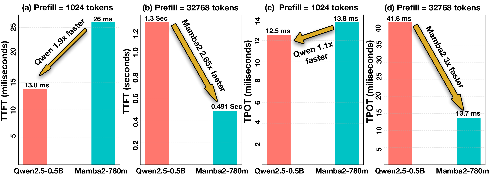
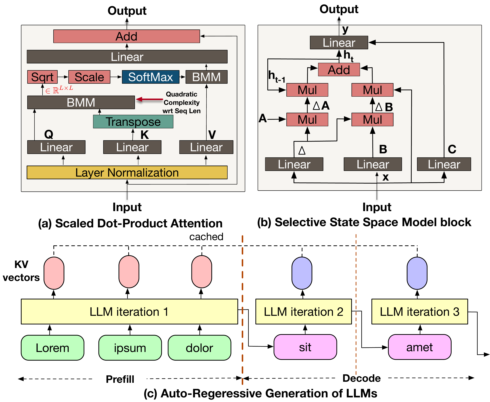
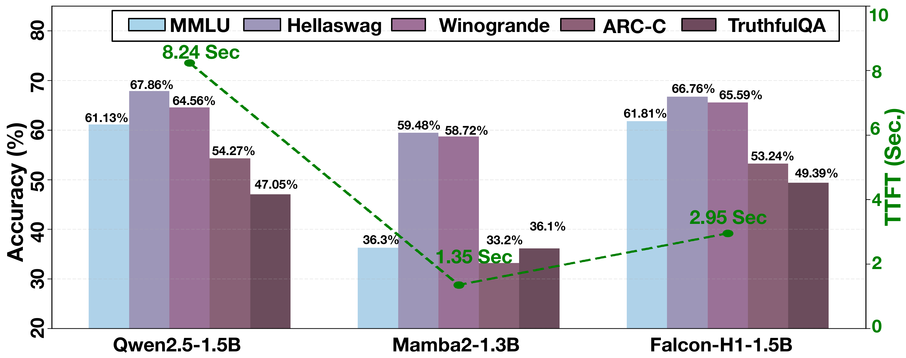
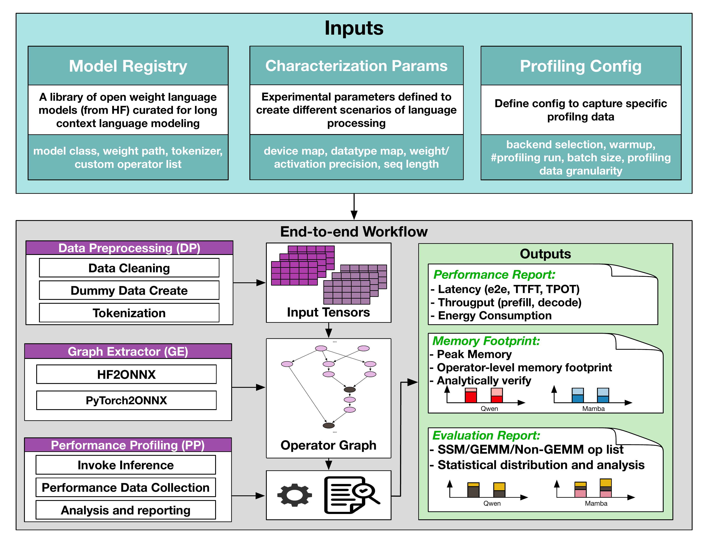
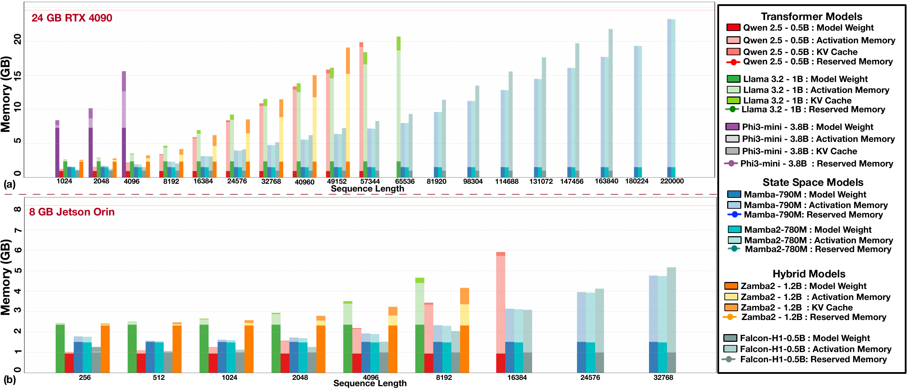
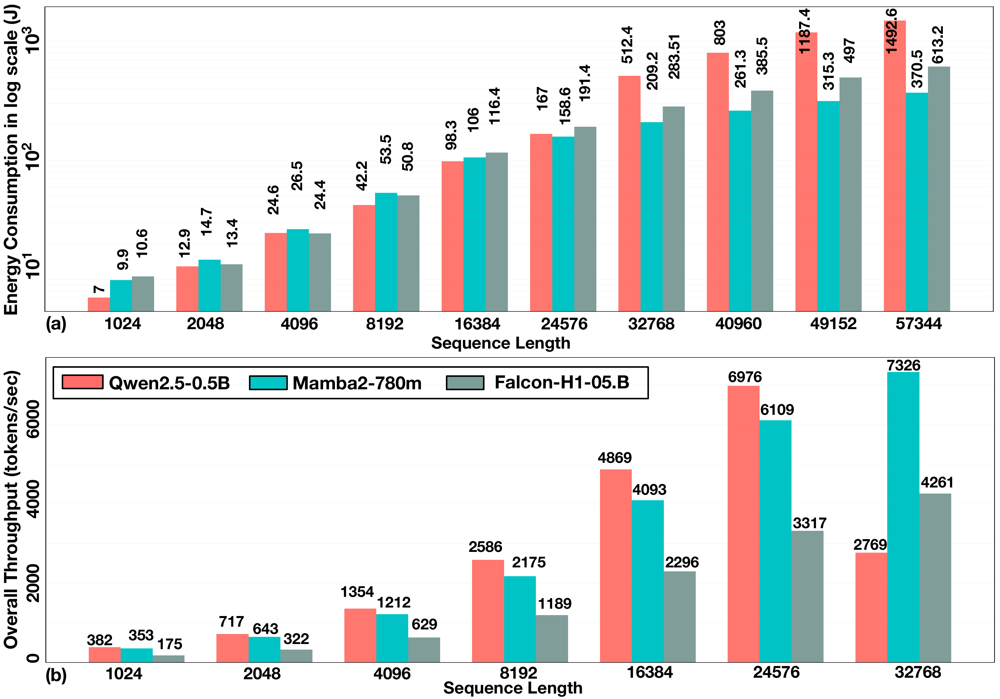
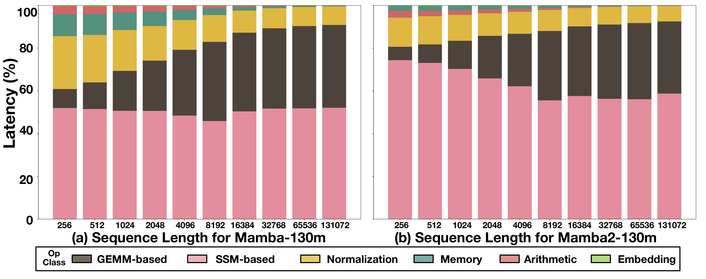

Emerging applications such as AR are driving demands for machine intelligence capable of processing continuous and/or long-context inputs on local devices. However, currently dominant models based on Transformer architecture suffer from quadratic computational and memory overhead, which hinders applications required to process long contexts. This has spurred a paradigm shift towards new architectures like State Space Models (SSMs) and SSM-Transformer hybrid models, which provide near-linear scaling.
To address this gap, we present a comprehensive, comparative benchmarking of carefully selected Transformers, SSMs, and hybrid models specifically for long-context inference on consumer and embedded GPUs. Our analysis shows that SSMs are well-suited for on-device AI on consumer and embedded GPUs for long context inferences. While Transformers are up to 1.9× faster at short sequences (<8K tokens), SSMs demonstrate a dramatic performance inversion, becoming up to 4× faster at very long contexts (~57K tokens), thanks to their linear computational complexity and ~64% reduced memory footprint. Our operator-level analysis reveals that custom SSM kernels like selective scan, despite being hardware-aware to minimize memory I/O, dominate the inference runtime on edge platforms, accounting for over 55% of latency due to their sequential, element-wise nature. To foster further research, we open-source our characterization framework, SSM-Scope.
At ~57K tokens, SSMs outperform Transformers by up to 4× in TTFT, thanks to linear O(n) complexity.
SSMs handle up to 220K tokens on a 24 GB consumer GPU — 4× beyond what optimized Transformers can reach without offloading.
At 57K tokens, Mamba-2 (370 J) consumes ~75% less energy than Qwen2.5 (1492 J) thanks to linear compute scaling.
Selective-scan and related SSM-specific operators account for over 55% of total inference latency on Jetson edge platforms.
At short sequence lengths, heavily optimized Transformer models such as Qwen2.5 outperform SSMs. However, as context length grows, the quadratic memory and compute cost of attention creates an insurmountable bottleneck. The figure below encapsulates this performance crossover on an RTX 4090, comparing Qwen2.5-0.5B (Transformer) and Mamba2-780m (SSM) across representative prefill and decode workloads.

We evaluate three primary model families: (1) Transformers, which use scaled dot-product attention with KV-cache and O(n²) complexity; (2) SSMs (Mamba, Mamba-2), which use a selective state mechanism with O(n) complexity and constant O(1) memory during generation; and (3) Hybrid models (Zamba2, Hymba, Falcon-H1), which interleave attention and SSM layers to combine accuracy and efficiency.

While pure SSMs achieve the fastest inference, they sacrifice accuracy on knowledge-intensive tasks. Hybrid models like Falcon-H1 bridge this gap — achieving accuracy on par with or exceeding Transformer baselines while maintaining a 2.8× TTFT speedup.

SSM-Scope is an open-source, backend-agnostic performance characterization framework for language models. It takes a workload configuration (model registry entry, sequence lengths, batch sizes) and profiling configuration as input, and produces end-to-end and operator-level breakdowns for latency, memory, and energy metrics.

| Specification | GPU 1 — Consumer | GPU 2 — Edge |
|---|---|---|
| GPU Model | NVIDIA RTX 4090 | NVIDIA Jetson Orin Nano |
| Architecture | Ada Lovelace | Ampere |
| Streaming Multiprocessors | 128 | 8 |
| Compute Throughput | ~330 TFLOPS | ~20 TFLOPS |
| GPU Memory | 24 GB GDDR6X | 8 GB LPDDR5 (Shared) |
| Memory Bandwidth | 1,008 GB/s | 68 GB/s |
| Host Interconnect | PCIe 4.0 ×16 | Integrated on-chip |
Jetson Orin Nano evaluated in MAXN power mode with 16 GB NVMe swap enabled.
| Architecture | Family | Parameter Sizes | Quantized Checkpoint |
|---|---|---|---|
| Transformer | Qwen2.5 | 0.5B, 1.5B | ✓ |
| Phi-3-mini | 3.82B | ✓ | |
| Llama-3.2 | 1B | ✓ | |
| TinyLlama / GPT-Neo | 1.1B / 125M | — | |
| SSM | Mamba | 130M, 370M, 790M, 1.4B, 2.8B | ✓ |
| Mamba-2 | 130M, 370M, 780M, 1.4B, 2.8B | ✓ | |
| Hybrid | Zamba2 | 1.2B, 2.7B | — |
| Hymba | 1.5B | — | |
| Falcon-H1 | 0.5B, 1.5B | — |
We characterize peak GPU memory across sequence lengths from 1K to over 220K tokens. Transformers (Qwen2.5, Llama3.2) reach their out-of-memory (OOM) limits at 57K–65K tokens on the RTX 4090 due to the growing KV-cache. By contrast, SSMs carry no KV-cache and their activation memory scales linearly at a much lower rate, allowing Mamba and Mamba-2 (~790M) to run at up to 220K tokens within 24 GB. Falcon-H1 extends to ~164K tokens, far beyond same-accuracy Transformer models. On the edge Jetson platform, SSMs and hybrids again show clear advantage, supporting contexts >16K where Transformers cannot operate.

We measure total inference energy (J) and end-to-end token throughput (tokens/s) across contexts from 1K to 57K tokens on the RTX 4090, for three representative models: Qwen2.5-0.5B (Transformer), Mamba2-780m (SSM), and Falcon-H1-0.5B (Hybrid).
At short sequences (<16K), Transformers benefit from highly optimized GEMM kernels and consume comparable or less energy. However, beyond this threshold the quadratic compute burden reverses the trend dramatically. At 57K tokens, Qwen2.5 consumes 1,492 J — approximately 4× more than Mamba-2 (370 J). The hybrid Falcon-H1 (613 J) offers a balanced profile: 2.4× more energy-efficient than Transformer while maintaining higher accuracy. For throughput, Mamba2 achieves 2.64× and Falcon-H1 achieves 1.54× the throughput of Qwen2.5 at 32K sequence length.

To understand the runtime composition of SSMs and hybrid models, we classify all operators into three
categories: SSM-specific kernels (e.g., mamba_inner_fn,
mamba_split_conv1d_scan_combined_fn), GEMM-based operators (e.g.,
matmul, linear), and non-GEMM operators (normalization,
memory layout, activations). We profile latency breakdown across sequence lengths from 256 to 131K tokens
on both the consumer and edge GPUs.

SSM-specific kernels remain a near-constant dominant fraction of runtime regardless of context length. GEMM share grows, but SSM kernels define the optimization target.
SSM operators account for >55% of latency on Jetson across all tested sequence lengths — even more dominant than on the consumer GPU for Mamba-1.
Unlike SSMs, hybrid models (Zamba2, Hymba) do not show a single dominant operator class. Bottlenecks are model-specific — underscoring the need for per-model profiling tools like SSM-Scope.
For hybrid models, optimization gains on one platform (consumer GPU) transfer broadly to the other (edge GPU), since operator breakdown trends remain consistent across devices.
If you find SSM-Scope or this work useful in your research, please consider citing:
@article{mitra2025characterizing,
title = {Characterizing State Space Model (SSM) and SSM-Transformer Hybrid
Language Model Performance with Long Context Length},
author = {Mitra, Saptarshi and Karami, Rachid and Xu, Haocheng and
Huang, Sitao and Kwon, Hyoukjun},
journal = {arXiv preprint arXiv:2507.12442},
year = {2025}
}